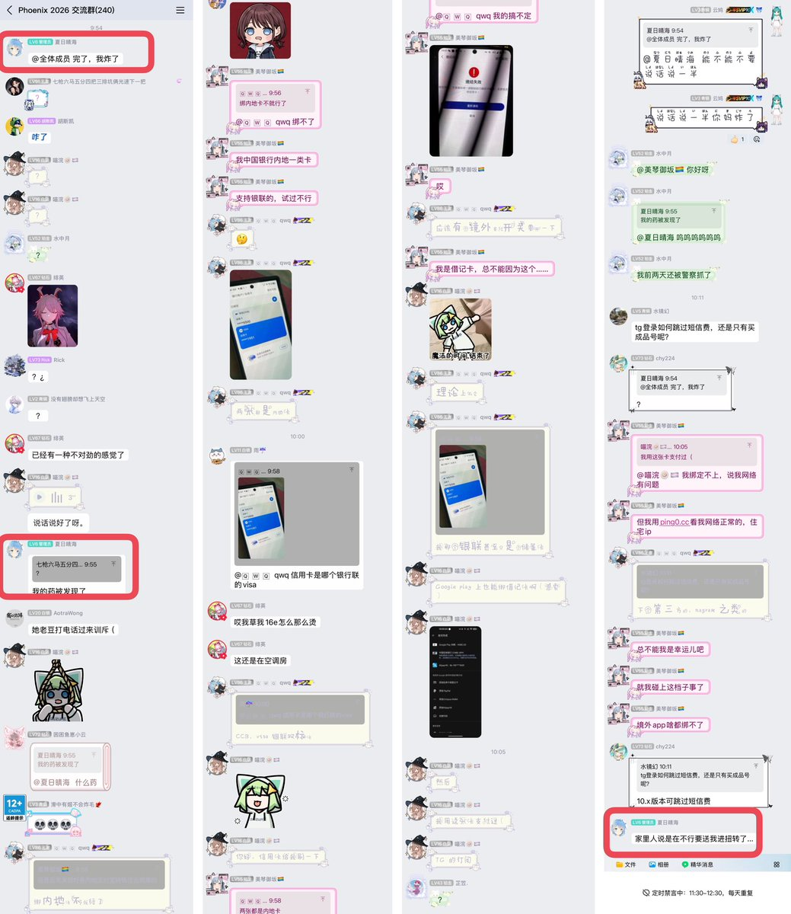

🍀🍥竹蜻蜓🍥🍀
@zqtlovekris99
@CldGeo 我也很烦这种一点破事就@全体，还有的人@完也不说话，就发个语气词或者表情包，他们真的不觉得这样很打扰人吗真是的

九鸟
@CldGeo
注意嗷，我很反感像雨晴这样说话说一半的行为。今天也是在他群里被@全体打扰到了，大家都很急。和截图一样，雨晴隔了好久才继续说话，给咱急坏了。
不仅在群里，有些人在推上也这样，发一条不知何意味的帖子当谜语人。。。说话请别大喘气好吧
我不习惯背后蛐蛐人，一般会公开表达自己的不满，还请见谅 https://t.co/dODr3JQ49v https://t.co/UVjsWHsrrz